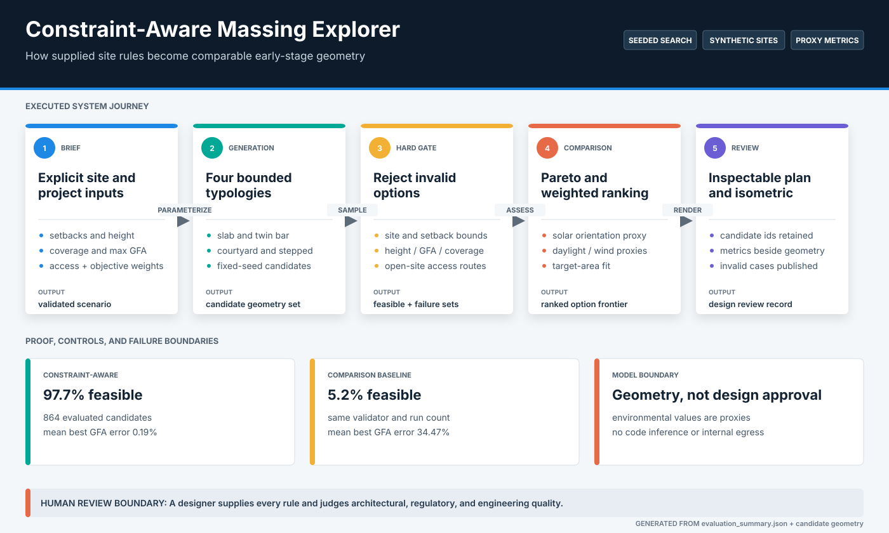
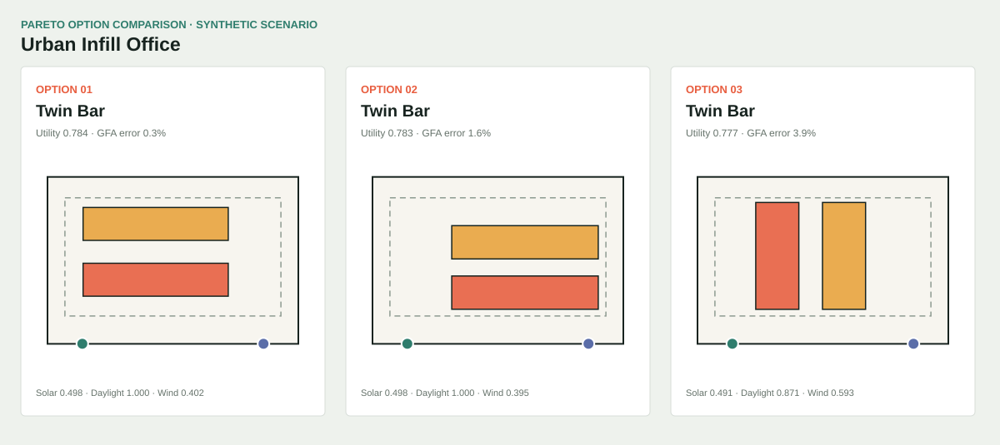

Early design options must satisfy supplied constraints before environmental, access, area, and form trade-offs are compared.
Primary case study / Computational design
Constraint-Aware Massing Explorer
A transparent geometric search tool for early option comparison.
Supplied site and programme parameters generate seeded rectangular massing options. Hard feasibility checks are applied before transparent proxy objectives and Pareto ranking.
Actual local interface / synthetic site inputs
Typed site schema, seeded generators, hard feasibility checks, editable proxy objectives, Pareto ranking, and SVG outputs.
864 candidates per method across authored synthetic sites, compared with an unconstrained random baseline.
Rectangular schematic envelopes only. No code inference, developed plan, calibrated simulation, structure, or approvable design.
System
Hard checks precede ranking
The tool does not ask a score to compensate for a failed setback or height constraint. Infeasible options are rejected first; proxy objectives only compare the remaining schematic envelopes.

Measured behavior
Constraint-aware search sharply reduces invalid options
The baseline establishes whether the generator is doing more than sampling rectangles. Results describe the authored synthetic scenarios and simplified geometry, not design quality.


Engineering decisions
Geometry and assumptions stay inspectable
The project favors explicit schemas and simple geometry over an opaque claim of AI-generated architecture.
Typed project parameters
Site dimensions, setbacks, height, target GFA, access edge, and proxy weights enter through a validated schema rather than free-form prompting.
Seeded option generation
Every option set can be regenerated from its method, parameters, and seed. This makes ranking changes and test failures reproducible.
Hard feasibility gate
Boundary, setback, floor-count, and supplied height rules reject options before multi-objective comparison.
Transparent proxy objectives
Solar exposure, wind openness, access distance, and compactness remain visible heuristics. They are not presented as calibrated environmental analysis.
Retained limitation
A feasible envelope is not a resolved building.
The current schema cannot reason about internal egress, accessibility routes, structure, cores, servicing, or detailed code clauses. These omissions remain outside the score and the integration contract.
Inspect failure analysisRun locally
Regenerate options and evaluation
The evaluator regenerates the authored synthetic scenarios, compares the constrained method with the baseline, and rewrites the visual evidence deterministically.
python projects/constraint-aware-massing-explorer/evaluate_massing.py
python -m pytest tests/test_massing_explorer.py
streamlit run projects/constraint-aware-massing-explorer/app.py